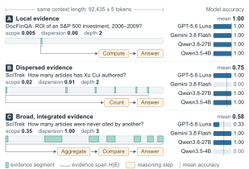

Build 12 task packets
Make six independent pairs. Each pair uses the same documents but changes the target. Use invented names and values so pretrained knowledge cannot supply the answer.
Sometimes. The interesting part is knowing which information helps, when it gets in the way, and how little is enough.
Start with the idea. Explore the evidence. Leave with an experiment you can actually build.
A bigger desk helps only if you can
use what’s on it.
Imagine giving an assistant a folder before asking it to make a decision. The folder is its context: instructions, your question, documents, examples, and tool results.
Everything in the task’s source packet.
The material actually included in this model call.
The information the model must correctly apply.
An operational definition for this guide, aligned with Anthropic’s context-engineering article ↗.
Full context means the whole task packet fits and is supplied. Limited context means only a selected portion is supplied. Every model has a finite input limit; reserve room for its output too.
Each trial starts fresh. We change what appears in the current input. Persistent memory, cross-session recall, model training, and external storage policies are outside this experiment.
TokenA unit of text processed by a model; often a word fragment.
Context windowThe model’s capacity for the input and, depending on the API, generated output.
RelevanceWhether a piece of information helps with this particular question.
ScopeWho or what a fact or rule applies to: this project, this customer, this time period.
Evidence coverageHow much of the information needed for the answer is present.
AblationChanging one part of a design to see whether it actually helps.
The evidence supports conditional conclusions. Longer inputs can help; irrelevant material, evidence placement, and reasoning demands can change the outcome.
RULER’s authors explain why finding one hidden fact is insufficient: “However, this simple retrieval-based test is indicative of only a superficial form of long-context understanding.” RULER, p. 1 ↗
Read the three rows: finding a local fact, combining scattered facts, and integrating broad evidence are different jobs.
This is an illustrative set of examples from LURCH, not an average across its entire benchmark. Its broader analysis reports associations, not a controlled causal proof for our proposed task.
Read the original figure and paper ↗
Optimize for enough applicable evidence, then measure whether extra context helps or interferes. “Always include more” and “always include less” are both poor starting assumptions.
This is our synthesis of the sources above, not a universal law or a measured result from this project.Two teams need rooms. The folder is identical. Switch the target team, then change the context policy to see what reaches the decision.
The room example and filtering rules are authored teaching examples. The real experiment below tests actual model outputs.
Here “context” means task input. The examples below are design hypotheses to test in your product, not measured rankings of industries.
Language modelingThe token sequence conditioning a prediction.
In-context learningExamples or rules in the input that demonstrate the task without updating weights.
Tool-using agentsGoals, tool definitions, observations, and instructions supplied for the next action.
Document question answeringSource passages needed to support a response, including relationships across passages.
Multimodal modelsText plus images, audio, video frames, or their representations supplied as input.
Control and roboticsObservations and task instructions used to choose an action; hidden environment state is not automatically visible context.
Operational distinctions for this guide. Multimodal and in-context learning examples: Gemini 1.5. Agent input components: Anthropic. This is not a survey of human cognition or robotics.
These interventions change the current input. None requires persistent memory.
| Technique | In plain language | What might go wrong | First test |
|---|---|---|---|
| Task-aware selection | Include source blocks relevant to the current target. | A similar-looking block wins while an essential exception is omitted. | Evidence coverage versus input size. |
| Scope separation | Group rules by the project, person, or date they apply to. | The model still applies a neighboring group’s rule. | Wrong-scope actions at matched token counts. |
| Evidence positioning | Move critical evidence to a consistent place. | A format fix works only for one model or task. | Beginning / middle / end, same evidence. |
| Current-task compression | Shorten supplied evidence while retaining its conditions and exceptions. | “Only if” or “unless” disappears. | Exact excerpts versus compressed equivalents. |
| Task decomposition | Give each subdecision the input it needs, then combine the outputs. | Relationships spanning subdecisions are lost; calls cost more. | Whole-task success and total token use. |
| Tool-context pruning | Expose clear, relevant tool definitions and concise tool responses. | A required action or output field is no longer available. | Tool-choice accuracy and missing-field errors. |
Selection and tool design: Anthropic. Position: Lost in the Middle. Evidence structure: LURCH. Decomposition direction: Trained Agentic Context Management. The suggested tests are our proposals.
Can an agent use the right rules for the right task—even when the context contains very similar rules for something else?
Give an event-planning assistant a packet containing team requirements, room options, and booking rules. Ask it to choose a valid room and call a simulated book_room tool.
Run the River and Summit requests separately. Reset the model and tool state each time. The paired tasks share documents, not conversation history.
Clearly separating scope can reduce rule mix-ups even when all required evidence already fits. A small, well-selected input may approach full-context success—but only if selection preserves every necessary constraint.
A prediction to test. Failure is an informative result.Make six independent pairs. Each pair uses the same documents but changes the target. Use invented names and values so pretrained knowledge cannot supply the answer.
Full input, full input with scope groups, recent-only input, lexical selection, scope-aware selection, and a privileged evidence-only diagnostic.
Does the booking satisfy all applicable constraints? Which evidence was omitted? Was a rule from the other team applied?
Improve selection, formatting, reasoning, or the budget according to the failure category. Don’t add complexity without evidence.
| Policy | Input | What it tells us |
|---|---|---|
| Full · flat | All source blocks, with their original scope labels. | The full-information reference. |
| Full · grouped | Identical facts and labels, regrouped by scope. | Whether arrangement helps without adding evidence. |
| Limited · recent | The last whole blocks that fit. | A simple truncation baseline; may lose evidence. |
| Limited · lexical | BM25-ranked blocks under the same budget. | A strong simple selection baseline. |
| Limited · scoped | Filter by explicit target/shared metadata, then use the same ranker. | Whether applicability filtering helps selection. |
| Oracle · diagnostic | Evaluator-selected minimal sufficient evidence, if it fits. | Separates selection failures from downstream errors; not deployable. |
All practical policies use the same source packet and answering model. The oracle alone sees evaluator annotations. This is a comparison of input policies; full versus limited also changes evidence exposure. Use the controlled tests below to isolate causes.
Start with one frozen model, 12 tasks × 6 policies = 72 pilot rollouts. Use a 2,000-token total input cap for limited policies; keep every full packet comfortably within the chosen model’s supported window. Count instructions, question, tools, and source blocks together. Reserve output separately. The pilot checks the harness, not a scientific conclusion.
Then use 60 fresh independent pairs, with three repetitions per task and policy. That is 60 × 2 × 6 × 3 = 2,160 rollouts before additional variants. Fix sample size from pilot variance and the effect you care about; do not treat repetitions as independent new tasks.
Primary outcome: all-constraints action success. Also report wrong-scope actions, required-evidence coverage, success when coverage is complete, actual input/output tokens, total monetary cost, and latency. Bootstrap paired differences by packet pair. Report uncertainty; failure to find a difference is not evidence of equivalence.
Only after the main comparison, expand limited budgets to 1k / 2k / 4k tokens and vary distractor similarity, evidence dispersion, exception count, and task type. Treat large crossed sweeps as a later project.
Length, position, distraction, and instruction confusion already have substantial prior work. The candidate contribution is a paired relevance-reversal test of scope binding, with action-level grading and separate coverage diagnostics.
The targeted review did not establish that this exact combination is unique. DIM-Bench, GSM-DC, and LURCH are close neighbors; a deeper novelty audit is required before calling it a new benchmark or publishing a novelty claim.
Start with the accessible engineering article, then the diagnostic papers. Each card says what was checked and why the source matters.
Focused scoping review, not a systematic review or exhaustive search. Primary papers and Anthropic’s own engineering writing were consulted. Recent preprints are provisional; benchmark findings do not establish universal agent behavior. No experiment was run for this website.